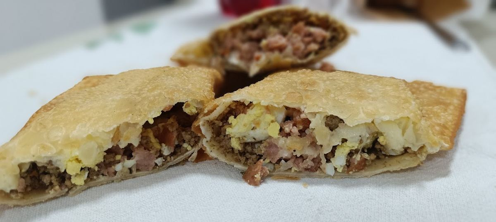
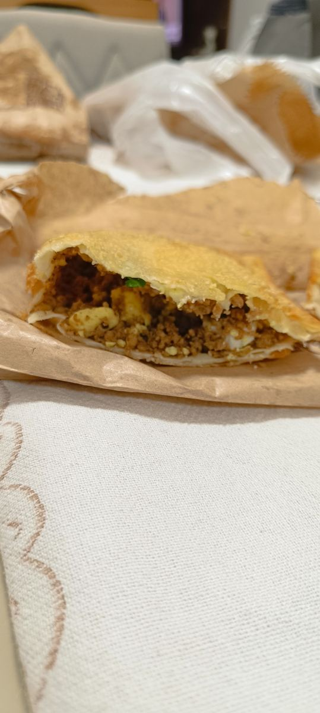
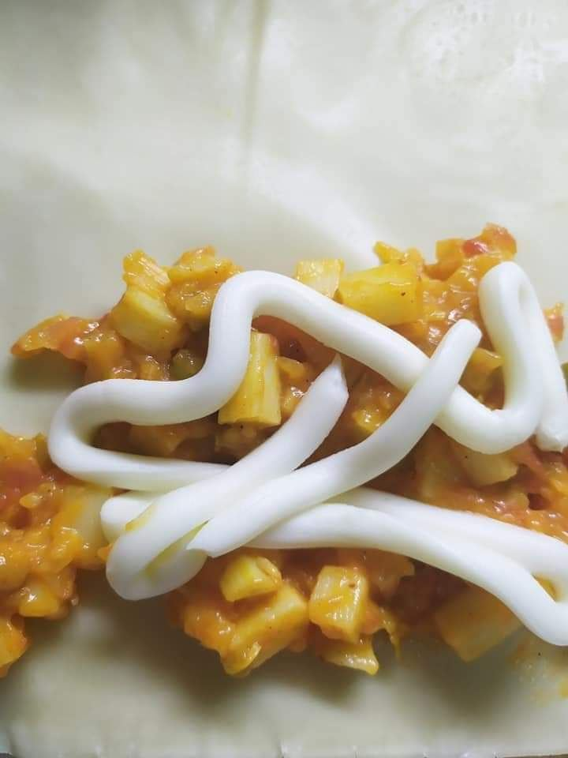
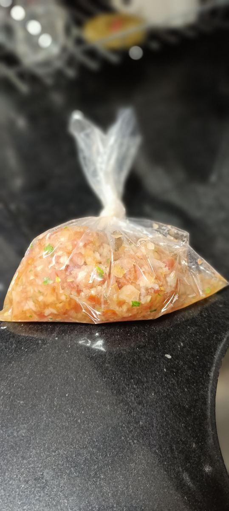

Desde 2002
Pastel sequinho e o vinagrete que todo mundo pede junto.
Massa crocante, recheio generoso e bem temperado. Tem cliente que frequenta há mais de 20 anos e jura que é o melhor pastel de Campinas. Peça para comer aí ou receber em casa.
4,9 ★ com 198 avaliações no Google · abre à noite



Cardápio
Escolha e junte na sacola
Toque no + e mande o pedido somado no WhatsApp.
Valores do cardápio de delivery online (Anota AI). Podem mudar; a pastelaria confirma no pedido.

O vinagrete é parte do pastel
É o detalhe que mais aparece nas avaliações: fresquinho, bem picado e no tempero certo. Vai junto em todo pedido.
Fui muito bem atendido, o pastel estava muito bom, com um vinagrete muito bem feito. Recomendo!Diego · Google
4,9 · 198 avaliações no Google
Mais de 20 anos de freguesia
Mais de 20 anos tenho o prazer de frequentar o melhor pastel de Campinas. Ambiente familiar, pastel perfeito, no capricho.Juliana · Google
Pastel muito saboroso, massa gostosa e generosa, sequinho e muito bem temperado.Avaliação no Google
Quem não experimentou, experimente e peça o de milho, catupiry e queijo.Resumo das avaliações · Google
Onde fica
Fundação da Casa Popular
| Segunda a sexta | à noite, até as 22h |
| Sábado | 18h30 às 22h30 |
Av. João Batista Morato do Canto, 257 · Campinas (SP)
WhatsApp (19) 99161-2817 · @pasteldogutao